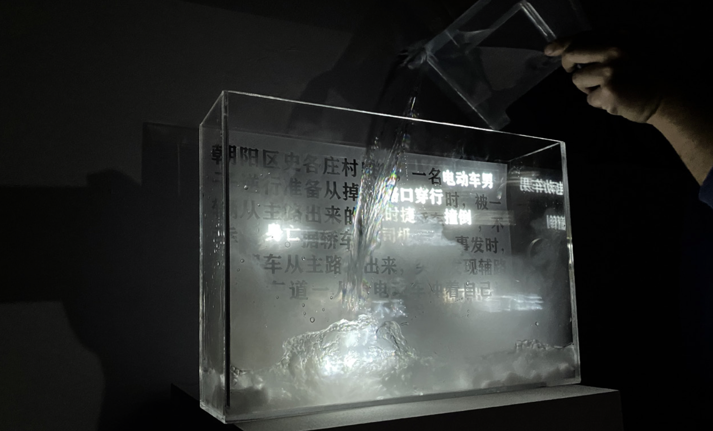

Haze

In today’s information society, we receive thousands of pieces of news every day. However, some unethical media and journalists, regardless of basic news- reporting ethics, exaggerate negative news and even make up fake news to capture readers’ attention and get more clicks. As the unknowing readers, we will be easily blinded by the so-called “reliable” news and then misunderstand what’s going on, which inspires me to create an interactive work to make people aware of how hypocritical these unethical media are.
I collected various unethical news on the Internet and extracted some of the expressions which may greatly influence what people think of while reading. Then I extracted all these expressions and the rest of the articles.
Then I uesed a lot of dry ice to make a smoke effect. After debugging the projector several times, I put dry ice in front of the wall and poured hot water to create white smoke. As the smoke from dry ice sinks, it naturally forms a smoke curtain.

When making the fog curtain, I found it was difficult to make the fog produced by dry ice get close to the wall so that the expressions could not be clearly projected on the fog. Therefore, I tried another way to control the fog. I made a box with PVC materials and inserted a tube on one side of the box, by which the fog produced by dry ice could coil in the box and the expressions projected on the fog would be clear enough.
In the news I read on the Internet,the expressions of “female driver”,“hit someone” and “Porsche” were highlighted, inducing people to think that the accident was the result of careless driving. However, after reading the news carefully, it would be found that the death of the man hit by the car resulted from his traveling on the wrong side, and the female driver was innocent.